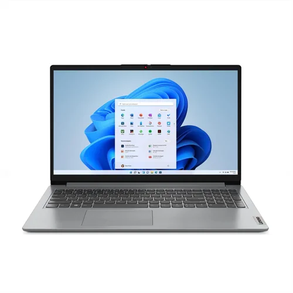
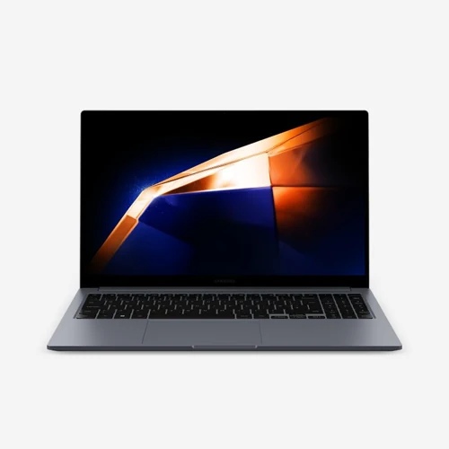
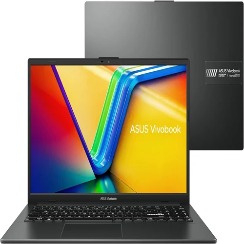
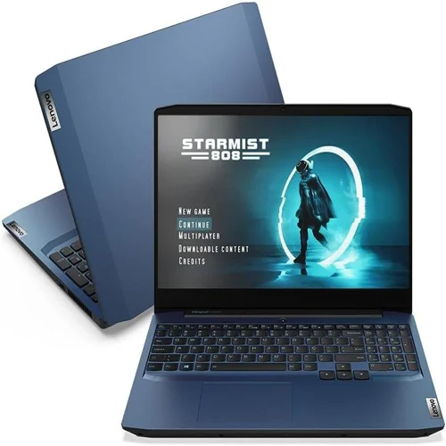
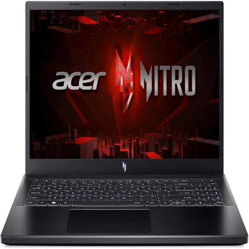
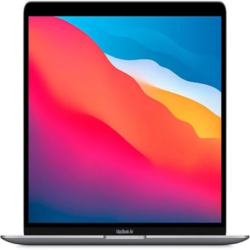
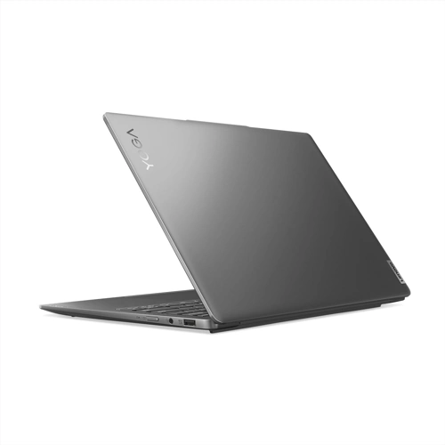
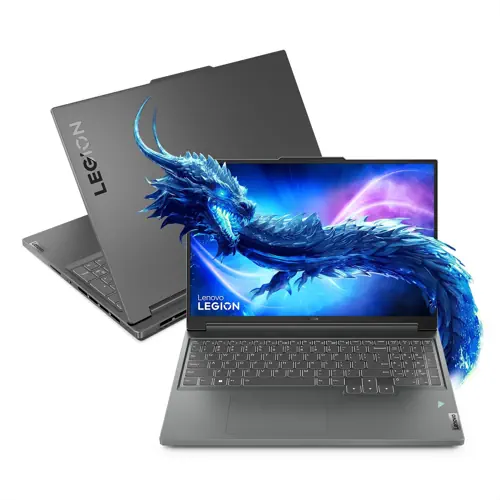
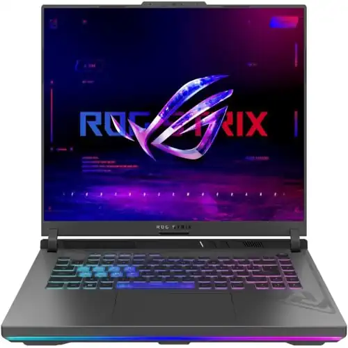

O ano de 2024 está repleto de novidades no mercado de notebooks, e com tantas opções disponíveis, escolher o modelo ideal pode ser uma tarefa desafiadora. Seja para estudar, trabalhar ou jogar, a escolha do notebook certo envolve a avaliação de diversos fatores, como potência, desempenho, design e, claro, custo-benefício. Ao longo deste artigo, exploraremos as melhores opções de notebooks para diferentes faixas de preço, oferecendo sugestões tanto para quem busca algo mais acessível quanto para quem está disposto a investir em um modelo topo de linha.
Notebooks até R$ 2.000: Vale a pena?
Se você está procurando notebooks abaixo de R$ 2.000, deve ter em mente que as opções disponíveis no Brasil não são as mais recomendadas, especialmente se você busca um dispositivo com boa performance. Nessa faixa de preço, a maioria dos modelos vem equipada com processadores como o Intel Celeron e apenas 4 GB de memória RAM, o que pode limitar bastante a usabilidade do dispositivo.
Alternativa Viável: Um Tablet
Para quem realmente está com o orçamento limitado e precisa de um dispositivo básico para atividades simples como assistir vídeos, estudar ou navegar na internet, a melhor recomendação pode ser um tablet. Um exemplo é o Redmi Pad SE da Xiaomi, que, por menos de R$ 2.000, oferece uma excelente relação custo-benefício. Com 6 GB de RAM e capacidade para conectar teclado e mouse, ele pode substituir um notebook básico com vantagem.
- Principais Vantagens:
- Processador eficiente para atividades básicas.
- Portabilidade e versatilidade.
- Ideal para estudos, navegação e entretenimento.
No entanto, se você precisa de um notebook com teclado físico e mais funcionalidade para trabalho ou estudos, recomendamos aguardar um pouco e investir em um modelo na faixa dos R$ 2.000 ou acima, onde há melhores opções.
Notebooks de R$ 2.000 a R$ 3.000: Melhores Opções de Custo-Benefício
Nessa faixa de preço, as opções começam a ficar mais interessantes. Aqui, encontramos modelos com processadores mais potentes, como Intel Core i3 e i5, além de opções com 8 GB de RAM, que proporcionam uma experiência muito mais fluida para quem precisa de um notebook para trabalhar, estudar ou até mesmo rodar alguns jogos leves.
Lenovo Ideapad 3i

Preço estimado: R$ 2.500
Especificações principais: Processador Intel Core i3-1215U, 4 GB de RAM e 256 GB de armazenamento SSD.
Destaques: É um dos melhores notebooks dessa faixa de preço, oferecendo boa performance para tarefas do dia a dia, estudos e até mesmo jogos leves. O único ponto negativo é a tela TN, que não tem a melhor qualidade de imagem, mas o desempenho compensa.
Samsung Galaxy Book 4 (i3)

Preço estimado: R$ 2.400
Especificações principais: Processador Intel Core i3 de última geração, 4 ou 8 GB de RAM.
Destaques: Um diferencial interessante deste notebook é a sua compatibilidade com carregadores USB-C, tornando-o extremamente prático para quem precisa de um dispositivo portátil para levar ao trabalho ou faculdade. Além disso, sua tela IPS oferece ótimas cores e qualidade de imagem.
Asus Vivobook com Ryzen 5

Preço estimado: R$ 2.200 a R$ 2.400
Especificações principais: Processador AMD Ryzen 5, 8 GB de RAM e SSD de 512 GB.
Destaques: Este modelo oferece um desempenho excelente pelo preço. Ele é capaz de rodar jogos como GTA V a 60 FPS e CS:GO a 80 FPS, o que o torna ideal para quem precisa de um notebook para estudos e diversão. O ponto negativo fica por conta da tela, que não é tão vibrante quanto outras opções.
Notebooks de R$ 3.000 a R$ 4.400: Opções para Jogadores e Profissionais
Aqui entramos na faixa de notebooks gamers e dispositivos com configurações mais robustas, ideais para quem trabalha com edição de vídeo, modelagem 3D ou precisa de uma máquina capaz de rodar jogos de forma estável.
Lenovo Gaming 3i

Preço estimado: R$ 3.000 a R$ 3.700
Especificações principais: Processador Intel Core i5 10300H, GTX 1650, 8 GB de RAM.
Destaques: Este modelo já vem equipado com uma placa de vídeo dedicada GTX 1650, o que permite rodar jogos modernos, desde que com as configurações gráficas ajustadas. É também uma ótima opção para profissionais que utilizam programas de renderização e edição.
Acer Nitro V15

Preço estimado: R$ 4.400
Especificações principais: Processador Intel Core i5 12450H, RTX 3050, 8 GB de RAM (expansível até 16 GB).
Destaques: O Acer Nitro 5 é um dos modelos mais populares entre os gamers que não querem gastar fortunas. Ele oferece excelente desempenho com sua placa de vídeo dedicada RTX 3050 e uma tela IPS de 144 Hz. Ideal para quem quer jogar com gráficos mais elevados ou precisa de um notebook potente para trabalhos pesados.
Notebooks acima de R$ 5.000: Potência Máxima
Para quem busca o que há de mais avançado no mercado, a faixa acima dos R$ 5.000 oferece opções premium tanto para gamers quanto para profissionais que exigem o máximo de desempenho.
MacBook Air M1

Preço estimado: R$ 6.300 (usado ou em promoções).
Especificações principais: Processador Apple M1, 8 GB de RAM e 256 GB de armazenamento.
Destaques: Se você não precisa de um notebook para jogar e busca desempenho para edição de vídeo, fotos e trabalhos criativos, o MacBook Air M1 é uma das melhores opções. Sua bateria dura cerca de 10 horas, o que o torna excelente para quem precisa de portabilidade.
Lenovo Yoga Slim 6

Preço estimado: R$ 4.100 (importado).
Especificações principais: Processador Core i5-12400, RTX 3050, 16 GB de RAM.
Destaques: Este é um dos notebooks mais completos do mercado. Com um design fino e elegante, ele oferece desempenho excepcional tanto para jogos quanto para trabalhos pesados. Sua tela 2.5K touch screen é um dos destaques, proporcionando uma excelente qualidade de imagem. Ideal para quem busca algo potente e portátil.
Notebooks Acima de R$ 9.000: Para Quem Quer o Melhor
Se o preço não é uma limitação e você busca o máximo em potência e desempenho, alguns modelos se destacam nessa categoria de elite.
Lenovo Slim 5i

Preço estimado: R$ 10.600
Especificações principais: Processador Intel Core i7 13700H, RTX 4060, 16 GB de RAM.
Destaques: Esse modelo oferece um desempenho extremamente robusto com a nova geração de placas de vídeo RTX 4060, ideal para quem trabalha com renderização pesada ou gosta de jogar com os gráficos no máximo.
Asus ROG Strix G16

Preço estimado: R$ 12.600
Especificações principais: Processador Intel Core i9 13980HX, RTX 4060, 16 GB de RAM.
Destaques: Este é o notebook mais potente da lista, equipado com um processador i9 de altíssima performance e uma placa de vídeo de última geração. Ele é capaz de rodar qualquer jogo ou software pesado com facilidade, além de ter um sistema de resfriamento avançado com metal líquido, ideal para quem busca o máximo de performance.
Conclusão
Escolher o notebook ideal para 2024 envolve uma avaliação cuidadosa das suas necessidades e orçamento. Se você precisa de algo básico, tablets como o Redmi Pad SE podem ser a melhor escolha. Já para quem busca performance e custo-benefício, opções como o Lenovo Ideapad 3i ou o Acer Nitro V15 oferecem excelente equilíbrio. E para quem busca o máximo em potência, notebooks como o ASUS ROG Strix G16 são ideais para usuários exigentes.
Independente da sua escolha, vale sempre acompanhar as flutuações de preço e buscar a melhor oferta possível. Com tantas opções disponíveis, certamente você encontrará o modelo perfeito para atender às suas necessidades!
 5 Celulares Baratos com Snapdragon que RODAM TUDO em 2024
5 Celulares Baratos com Snapdragon que RODAM TUDO em 2024 Top 5 Ar Condicionados Custo Benefício de 2024
Top 5 Ar Condicionados Custo Benefício de 2024 Os 5 Melhores Tablets Infantis de 2024: Diversão para as Crianças
Os 5 Melhores Tablets Infantis de 2024: Diversão para as Crianças